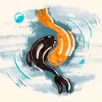
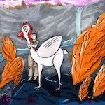
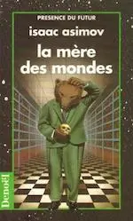
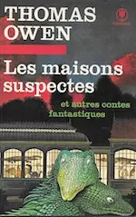
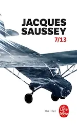

2020
Novembre
- 07 — Armée ou défense civile non-violente
- 05 — Mais moi je vous aimais de Gilbert Cesbron
- 02 — Des friches et des chiffres de Odette Laplaze-Estorgues
-
01 —
Inktober 2020


Octobre
Septembre
-
20 —
Drame, enquête et science-fiction

J’aimerais tellement que tu sois là (Graham Swift), Équinoxe (Michael White), La mère des mondes (Isaac Asimov) - 07 — 💖 Naruto de Masashi Kishimoto
Août
-
16 —
Nouvelles fantastiques et retour dans l’univers de Twilight

Les maisons suspectes (Thomas Owen), ♡︎ Midnight Sun (Stephenie Meyer) - 03 — La carotte
Juillet
- 16 — La courgette
- 16 — Le basilic
Juin
- 24 — Les larmes rouges de Georgia Caldera
-
16 —
Lectures hétéroclites de contes indiens à Guillaume Musso
Les aventures du Gourou Paramarta, L’appel de l’ange (Guillaume Musso)
-
09 —

7/13 de Jacques Saussey -
03 —
3 romans, 3 registres différents
Vampire brothers (Alice H. Kinney), Sans laisser de traces - Une enquête de Riley Paige (Blake Pierce), Âmes sœurs (John Marrs)